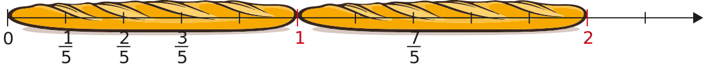

| Chapitre 3 | |
| Partie 1 | - Fractions : Partage et repérage |
| 4 | ← | Numérateur |
| 5 | ← | Dénominateur |
Ici la partie violette correspond à $\frac{1}{4}$ de l'unité.
| 1 | ← | Nombre de part colorié |
| 4 | ← | Nombre de part total |
Ici la partie violette correspond à $\frac{2}{8}$ de l'unité. Cette fraction représente la même quantité que $\frac{1}{4}$.
Exemple :
L'unité (ici la baguette de pain) est partagée en 5 parts égales.
La position du point M est $\frac{3}{5}$. Celle du point N est $\frac{7}{5}$.
Remarques :